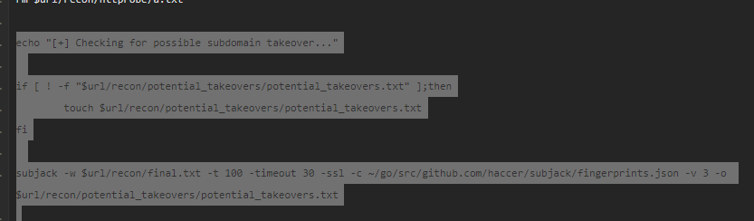

https://github.com/Gr1mmie/sumrecon
this is nice script guy
this is tcm ka script(https://pastebin.com/MhE6zXVt)

this helps when a subdomain is purchased or at times back in payment issues and stuff
so u could go and buy that subdomain and u ll have subdomain on ther main site

so this is like archive.org jaisa so u can know abt how site looked long back ago and would oull down intersting files
eg if key there in some file back then bt now isnt bt maybe key could yet be used